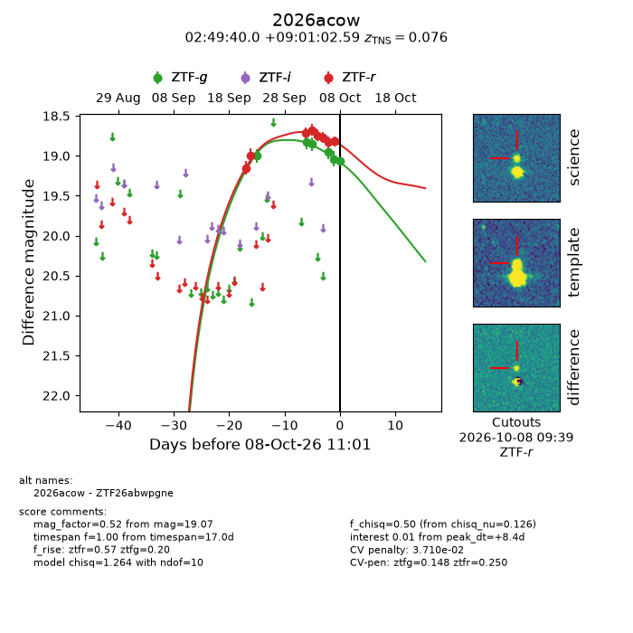
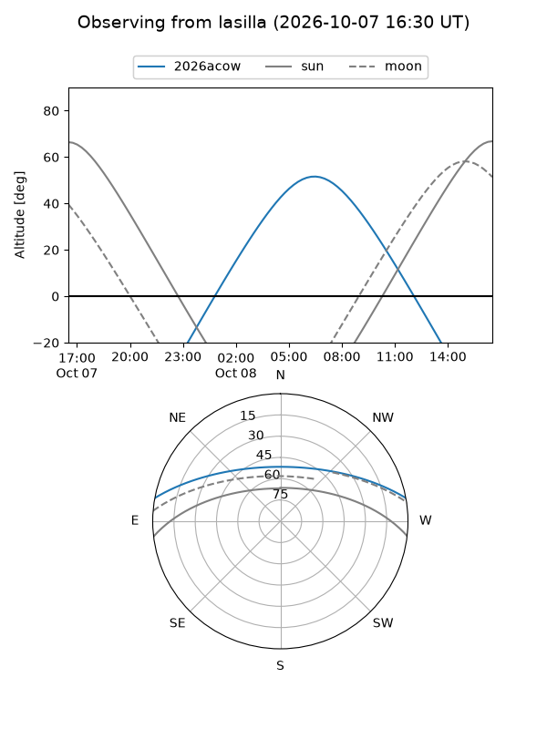
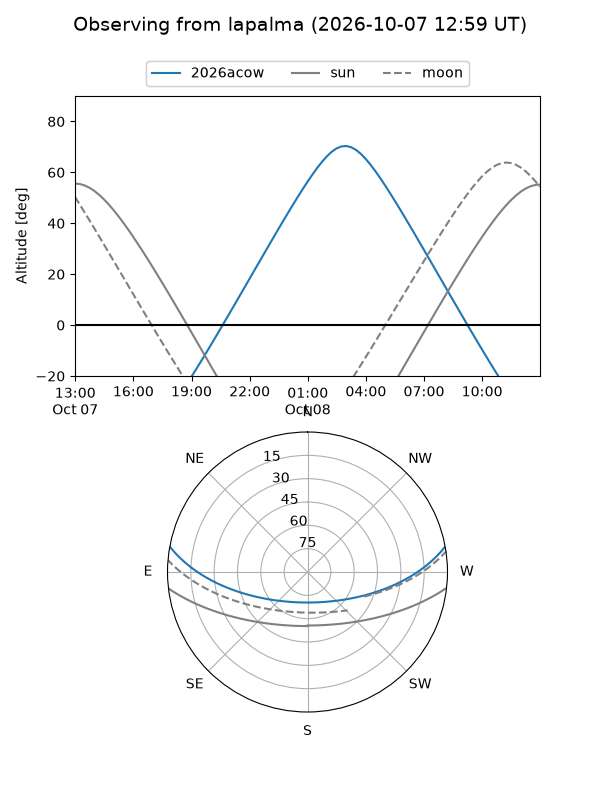
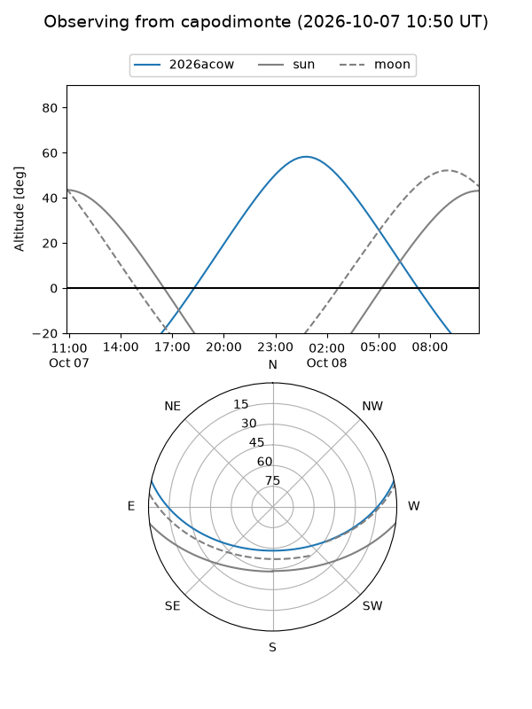
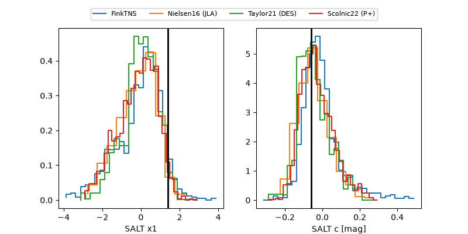

2026acow
Target 2026acow at 2026-10-08 11:04
Aliases and brokers:
FINK-ZTF: ztf.fink-portal.org/ZTF26abwpgne
Lasair-ZTF: lasair-ztf.lsst.ac.uk/objects/ZTF26abwpgne
ALeRCE-ZTF: alerce.online/object/ZTF26abwpgne
YSE-PZ: ziggy.ucolick.org/yse/transient_detail/2026acow
TNS name: wis-tns.org/object/2026acow
Direct TNS query: direct search
alt names
ZTF26abwpgne (ztf,fink_ztf)
2026acow (tns,yse)
Coordinates:
equatorial (ra, dec) = 42.4165,+9.01739
equatorial (HMS+DMS) = 02:49:39.96,+09:01:02.59
galactic (l, b) = (165.4558,-43.87865)
Flags:
TNS type: SN Ia
TNS redshift: 0.0760
peak dt: +8.4
likely cv: !!
Photometry:
last ztfg=19.07, ztfr=18.82
6 ztfg, 8 ztfr detections
Lightcurve

Visibility



Additional plots
